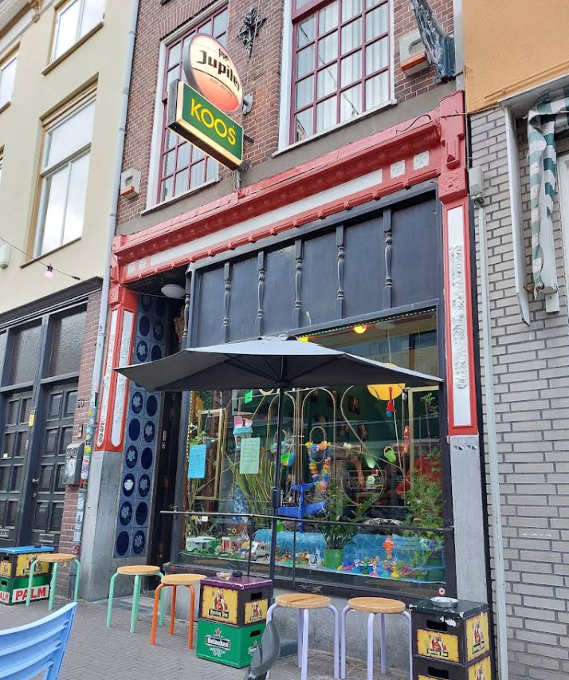

Een kroeg voor iedereen.
Café Koos is al jaren een vaste plek in de Boekhorststraat. Niet de chiqueste, niet de nieuwste, maar wel de gezelligste — als je het ons vraagt. Een kroeg met karakter: houten bankjes, gedempt licht, en een bar waar je uren aan kunt hangen.
We doen dingen op onze manier. Er hangt altijd kunst aan de muur van lokale kunstenaars. Het dartbord staat klaar. Niet elke vrijdag en zaterdag draait er iemand platen, maar je kan wel zomaar een DJ tegenkomen. En als je een nummer aanvraagt, draaien we het — tenminste, als het niet echt heel erg is. Zondag is kaas-en-verzoekjesdag: we draaien alleen maar nummers die de klanten willen.
We zijn vrouwvriendelijk en trots op de sfeer die we hebben. Iedereen is welkom, en dat menen we. Of je nu in je pak komt of in je lievelings-hoodie, of je nu stamgast bent of voor het eerst binnenstapt — je hoort erbij.
In de zomer schuift iedereen naar het terras. In de winter is het binnen zo warm als een huiskamer. Het bier is speciaal, de prijzen zijn eerlijk en de sfeer is light punky. Kortom: gewoon gezellig.
Waarom Café Koos
Vrouwvriendelijk
Iedereen mag zich op haar gemak voelen. Geen opdringerig gedrag, geen vervelende blikken. Gewoon een plek waar je ongezien of juist in het zonnetje gezet wordt — hoe jij het wil.
Alternatief
Geen hitparade-achtergrondmuziek, maar platen die we zelf draaien. Vinyl, punk, indie, jazz. En je mag een nummer aanvragen — we draaien het.
Laagdrempelig
Stamgasten, buurtbewoners en nieuwkomers door elkaar. Ouderwetse prijzen, geen poespas. Je valt zo binnen en bent zo in gesprek.


Reviews
De mensen die het weten kunnen vertellen.
Kom eens langs.
De koffie staat klaar en het bier is getapt. Geen reservering nodig — gewoon binnenlopen.